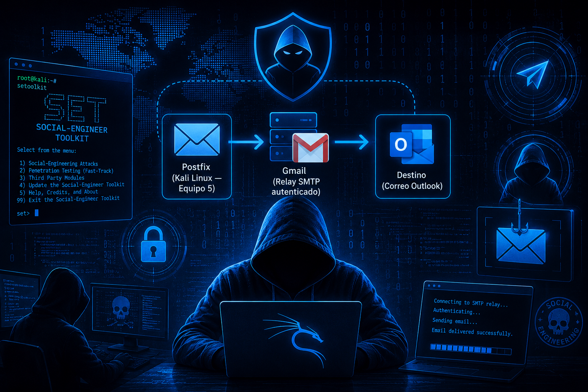

ACTIVIDAD 15 - Set.
Carlos René Castillo Olvera – 182033Materia: Seguridad Informática (CNO V)
Fecha: 07/5/2026
Docente: Lopez Servando

Objetivo
El objetivo de esta práctica fue simular el funcionamiento técnico de un atacante en el envío de correos mediante herramientas de ingeniería social, específicamente utilizando el Social-Engineer Toolkit (SET) sobre Kali Linux.
Social-Engineer Toolkit (SET)
El Social-Engineer Toolkit (SET) fue creado y escrito por Dave Kennedy, fundador de TrustedSec.
Se trata de una herramienta de código abierto, basada en Python, destinada a realizar pruebas de penetración mediante técnicas de ingeniería social.
SET ha sido presentado en conferencias de gran relevancia como Black Hat, DerbyCon, Defcon y ShmooCon.
Con más de dos millones de descargas, es considerado uno de los estándares más utilizados para pruebas de penetración orientadas a ingeniería social y cuenta con un amplio respaldo dentro de la comunidad de seguridad informática.
Arquitectura de la Solución
Postfix (Kali Linux — Equipo 5)
Servidor encargado de generar y enviar los correos electrónicos desde el entorno Kali Linux.
Gmail (Relay SMTP autenticado)
Servicio utilizado como relay SMTP autenticado para permitir el envío correcto de correos electrónicos hacia proveedores externos.
Destino (Correo Outlook)
Cuenta de correo receptora utilizada para validar la entrega de los mensajes enviados durante la práctica.
Funcionamiento de la Cadena de Envío
Se diseñó una cadena de envío de tres etapas para superar las restricciones de entrega directa impuestas por los proveedores de correo modernos.
El flujo de comunicación consistió en enviar los mensajes desde Kali Linux utilizando Postfix, posteriormente reenviarlos mediante el relay SMTP de Gmail y finalmente entregarlos al correo destino en Outlook.
Importancia del Relay SMTP
El uso de un relay SMTP externo fue necesario debido a que el envío directo desde una dirección IP residencial suele ser bloqueado por los filtros anti-spam implementados por los proveedores de correo electrónico.
Gmail permitió autenticar y retransmitir los mensajes, aumentando la probabilidad de entrega exitosa y reduciendo el riesgo de ser identificado como spam.